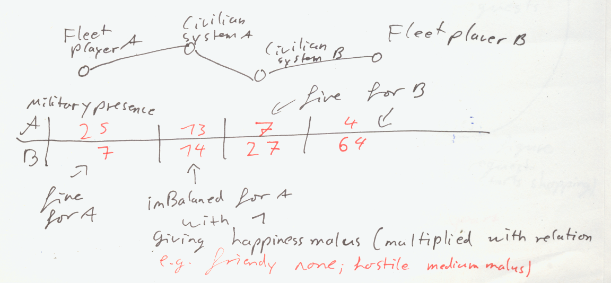

Game Concepts
Description
Fleets
Ships should be collected in entities like fleets and strike forces to allow easier management. (Same could be done to armies) (See also Object Hierarchy#Fleets)
Fleets should be lead by characters like officers.
Military Presence
Every Ship and ground unit should create military pressure depending on its strength around it. This value will decline over time and distance to act as a hint to the AI and encourage arms races, by increasing the demand for military presence by the pops on other empires. (Basically hostile pressure has to be counter by own culture pressure) (The effect on pops should differ depending on species and politics, so xenophobe warriors demand more military than peaceful xenophiles)
Turns
Splitting turns in long and short terms allows for a better game pacing (Buildings being built every n minor turns while fleets move every turn) This allows to make bigger decisions later and take some of the decision work form the player. (Of course this should be optional)
Points
As tribute to Civilization 3, I intend to introduce a point score. Points are earned by achieving self set objectives like:
- Expanding the fleet
- Expanding territory
- Protecting sentient species
- Eliminate sentient species
- Build palaces or monuments
- Keep population happy
- Launch out of map invasion or colonization (extragalactic or extradimensional, which also act as resource drains)
Politics
Politics is tied to binary values (e.g. pacifism vs Militarism). This enables every entity (party, pop, character) to have its opinion tracked by a array of integers. For pops it might be better if they have only on opinion and only if they are fanatic to keep the number of pops down. (Depending on what needs more space.)
Parties could pick from this values and align them self along a set of them to attract voters. The pops would now also need a weight attached to the so they can pick issues important for them or I need to track the importance by splitting the values into two integers.
Conflicts
Conflicts are vehicles for diplomatic tension (e.g. trade wars, cold wars, conventional wars). They always have at least one goal that somebody wishes to achieve (e.g. get control of a planet, subjugate another empire-entity, get the monopoly over a resource, get a certain tech, etc.). It should be possible to replace goals with similar goals (like get a claim on a planet with get a claim on the planet and its moon).
Everybody can enter the conflict for a fee depending on the situation (e.g. rivalry, competing claims etc.), except the target of a goal that is drawn in for free. This fee is paid in an adequate currency (e.g. diplomatic points, intelligence points, military pressure etc.) depending on the state and kind of the conflict. (Somebody else can also pay a fee to drag a party in).
The conflict has an escalation level, or array allowing a civilized debate to glide into total war. This level is influenced by deliberate spending of the conflicts participants and by their actions.
Also additional values like public opinion could be added, allowing different ways to end a conflict, like one party having to bow to public opinion.
Conflicts should be tree structures allowing them to accumulate into bigger conflicts or branch of into smaller ones. So a trade war that also contains a small scale war between minor 2 participants. (More infos in I007)
Implementation
Pending
See also:
- I004
- I005
- I007
- Object Hierarchy